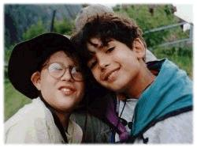

World Organization of the Scout Movement


-
Detailed Menu
-
Frequently asked questions (FAQ)
-
Leaders Info


 Have a look at our complete menu:
All these pages are for Scout groups to explore together, learn, and have fun. Our Site has these areas:
Informations
- 8 keys
- Media
- Scouting and Peace
- UNESCO
Basic principles and ideas about the Culture of Peace. This is just a starting point for Scouts to explore further by themselves. Examples from the lives of Scouts are provided to illustrate the principles. Scouts are also invited to send in other examples of each principle.
Information about Scouting commitments for Peace. All about UNESCO and the activities for the International Year for the Culture of Peace, the year 2000.
Activities
- Missing Words
- Big Debate
- The Peace Journal. Be a Scout reporter for a Culture of Peace
The two activities (Missing Words and the Big Debate) are designed for Scouts to play with the concepts in Culture of Peace, Media and News. To get comfortable with ideas, as a warm-up to the Reporting Activity.
The Big Debate describes how to organize a forum for discussion in your Scout group on the concepts of a Culture of Peace.
The Reporter for a Culture of Peace gives Scouts a chance to live the concepts and see how they relate directly to their own Scouting activities and environment. The Peace Journal will gather reports from scouts everywhere in the world about their peace initiatives.
Help
- Detailed Menu
- Frequently asked questions (FAQ)
- Leaders Info
Find out more about the site.
Links
- Links about the Culture of Peace
Some links to other places with information related to Culture of Peace.